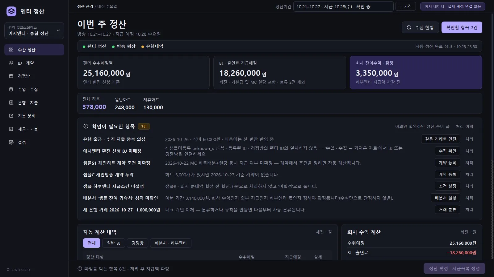

모르면 0원으로 채우지 않는다
등록되지 않은 BJ, 계약이 없는 BJ, 조건이 정해지지 않은 계산은 그 줄만 보류합니다. 무엇을 하면 되는지 버튼과 함께 띄우고, 조건이 정해지면 보류한 줄만 다시 계산합니다.
엑셀 시트 여러 장으로 하던 주간 정산을, 자료 수집부터 계산까지 프로그램이 맡고 담당자는 예외만 확인해 확정하도록 바꿨습니다. 기존 정산 엑셀 48주 치와 맞춰 보니 47주의 계산 결과가 같았습니다.

앞의 세 단계는 정해 둔 요일과 시각에 프로그램이 알아서 하고, 담당자는 남은 예외만 보고 확정합니다.
등록되지 않은 BJ, 계약이 없는 BJ, 조건이 정해지지 않은 계산은 그 줄만 보류합니다. 무엇을 하면 되는지 버튼과 함께 띄우고, 조건이 정해지면 보류한 줄만 다시 계산합니다.
원본에 나온 합계와 프로그램이 계산한 금액이 다르면 확정 버튼이 막히고 어느 줄이 다른지 보여 줍니다. 같은 자료를 다시 넣어도 두 번 계산되지 않습니다.
계약이 바뀌면 적용 시작일을 붙여 새로 등록하고, 지난 주 정산은 그때 계약으로 남습니다. 확정을 풀려면 사유를 적어야 하고, 이미 지급한 주는 풀 수 없습니다.
원천세와 부가세는 회사 수익과 따로 '보관해야 할 세금'으로 모아 납부 기한과 함께 보여 줍니다. 송금은 은행에서 직접 하고, 거래내역과 연결해 지급 완료를 확인합니다.
업체 이름과 화면 속 사람, 금액, 계좌는 모두 가상입니다. 예시 데이터로 실제 프로그램을 돌려 찍었습니다.
공개 범위 · 정산 계산 규칙과 고객 정보는 공개하지 않습니다. 업체 이름과 화면 속 사람, 금액은 모두 가상입니다.